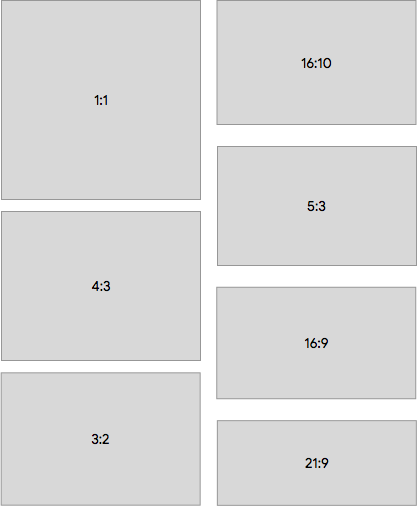

Updates made to these display-specific areas are provided below:
- Resizing activities and displays
- Display sizes and aspect ratios
- Display policies
- Display window settings
- Static display identifiers
- Per-display focus
Resizing activities and displays
To indicate that an app may not support multi-window mode or resizing,
activities use the resizeableActivity=false attribute. Common
issues encountered by apps when activities are resized include:
- An activity can have a different configuration from the app or another non-visual component. A common mistake is to read display metrics from the app context. The returned values won't be adjusted to the visible area metrics in which an activity is displayed.
- An activity may not handle resizing and crash, display a distorted UI, or lose state due to relaunch without saving the instance state.
- An app may attempt to use absolute input coordinates (instead of those relative to the window position), which may break the input in multi-window.
In Android 7 (and higher), an app can be set
resizeableActivity=false to always run in full screen mode. In
this case, the platform prevents non-resizable activities from going into split
screen. If the user tries to invoke a non-resizable activity from the launcher
while already in a split-screen mode, the platform exits split-screen mode and
launches the non-resizable activity in full-screen mode.
Apps that explicitly set this attribute to false in the
manifest must not be launched in multi-window mode, unless the compatibility
mode is applied:
- Same configuration is applied to the process, which contains all activities and non-activity components.
- Applied configuration meets the CDD requirements for app-compatible displays.
In Android 10, the platform still prevents non-resizable activities from going into split-screen mode, but they can be temporarily scaled if the activity has declared a fixed orientation or aspect ratio. If not, the activity resizes to fill up the entire screen as in Android 9 and lower.
The default implementation applies the following policy:
When an activity declared to be incompatible with multi-window through
use of the android:resizeableActivity attribute and when that
activity meets one of the conditions described below, then when the applied
screen configuration must change, the activity and process are saved with the
original configuration and the user is provided with an affordance to relaunch
the app process to use the updated screen configuration.
- Is fixed orientation via the application of
android:screenOrientation - App has default maximum or minimum aspect ratio by targeting API level or declares the aspect ratio explicitly
This figure displays a non-resizable activity with a declared aspect ratio. When folding the device, the window is scaled down to fit the area while maintaining the aspect ratio using the appropriate letterboxing. In addition, a restart activity option is provided to the user each time the display area for the activity is changed.
When unfolding the device, the configuration, size, and aspect ratio of the activity don't change, but the option to restart the activity is displayed.
When resizeableActivity is not set (or it is set to
true), the app fully supports resizing.
Implementation
A non-resizable activity with fixed orientation or aspect ratio is called
size compatibility mode (SCM) in code. The condition is defined in
ActivityRecord#shouldUseSizeCompatMode(). When an SCM activity is
launched, the screen-related configuration (such as size or density) is fixed
in the requested override configuration, so the activity is no longer dependent
on the current display configuration.
If the SCM activity can't fill the entire screen, it is top aligned and
horizontally centered. The activity bounds are computed by
AppWindowToken#calculateCompatBoundsTransformation().
When an SCM activity uses a different screen configuration than its
container (for example, the display is resized, or activity moved to another
display), ActivityRecord#inSizeCompatMode() is true and
SizeCompatModeActivityController (in System UI) receives the
callback to show the process restart button.
Display sizes and aspect ratios
Android 10 provides support for new aspect ratios
from high ratios of long and thin screens to 1:1 ratios. Apps can define
ApplicationInfo#maxAspectRatio
and the ApplicationInfo#minAspectRatio of the screen that they are
able to handle.

Figure 1. Example app ratios supported in Android 10
Device implementations can have secondary displays with sizes and
resolutions smaller than those required by Android 9, and lower (minimum of 2.5
inches width or height, minimum of 320 DP for smallestScreenWidth),
but only activities that opt in to support these small displays can be placed
there.
Apps can opt in by declaring a minimum supported size that is smaller than
oe equal to the target display size. Use the android:minHeight and
android:minWidth activity layout attributes in the
AndroidManifest to do so.
Display policies
Android 10 separates and moves certain display
policies from the default WindowManagerPolicy implementation in
PhoneWindowManager to per-display classes, such as:
- Display state and rotation
- Some keys and motion event tracking
- System UI and decoration windows
In Android 9 (and lower), the PhoneWindowManager class handled
display policies, state and settings, rotation, decoration window frame
tracking, and more. Android 10 moves most of this to
the DisplayPolicy class, except for rotation tracking, which has
been moved to DisplayRotation.
Display window settings
In Android 10, the configurable per-display windowing setting has been expanded to include:
- Default display windowing mode
- Overscan values
- User rotation and rotation mode
- Forced size, density, and scaling mode
- Content removal mode (when display is removed)
- Support for system decorations and IME
The DisplayWindowSettings class contains settings for these
options. They're persisted to disc in /data partition in
display_settings.xml every time a setting is changed. For
details, see DisplayWindowSettings.AtomicFileStorage and
DisplayWindowSettings#writeSettings(). Device manufacturers can
provide default values in display_settings.xml for their device
configuration. However, because the file is stored in /data,
additional logic may be needed to restore the file if erased by a wipe.
By default, Android 10 uses
DisplayInfo#uniqueId as an identifier for a display when persisting
the settings. uniqueId should be populated for all displays. In
addition, it's stable for physical and network displays. It's also possible to
use the port of a physical display as the identifier, which can be set in
DisplayWindowSettings#mIdentifier. Upon each write, all settings
are written so it's safe to update the key that's used for a display entry in
storage. For details, see "Static Display Identifiers" below.
Settings are persisted in the /data directory for historical
reasons. Originally, they were used to persist user-set settings, such as
display rotation.
Static display identifiers
Android 9 (and lower) did not provide stable identifiers for displays in the
framework. When a display was added to the system,
Display#mDisplayId or DisplayInfo#displayId was
generated for that display by incrementing a static counter. If the system
added and removed the same display, a different ID resulted.
If a device had multiple displays available from boot, the displays could be
assigned different identifiers, depending on the timing. While Android 9 (and
earlier) included DisplayInfo#uniqueId, it didn't contain enough
information to differentiate between displays because physical displays were
identified as either local:0 or local:1, to represent
the built-in and external display.
Android 10 changes DisplayInfo#uniqueId
to add a stable identifier and to differentiate between local, network, and
virtual displays.
| Display type | Format |
|---|---|
| Local | local:<stable-id> |
| Network | network:<mac-address> |
| Virtual | virtual:<package-name-and-name> |
In addition to updates to uniqueId,
DisplayInfo.address contains DisplayAddress, a
display identifier that is stable across reboots. In Android
10, DisplayAddress supports physical
and network displays. DisplayAddress.Physical contains a stable
display ID (same as in uniqueId) and can be created with
DisplayAddress#fromPhysicalDisplayId().
Android 10 also provides a convenient method to get
port information (Physical#getPort()). This method can be used in
the framework to statically identify displays. For example, it's used in
DisplayWindowSettings). DisplayAddress.Network
contains the MAC address and can be created with
DisplayAddress#fromMacAddress().
These additions allow device manufacturers to identify displays in static
multi-display set-ups and to configure different system settings and features
using static display identifiers, such as ports for physical displays. These
methods are hidden and are intended only to be used within
system_server.
Given a HWC display ID (which can be opaque and not always stable), this
method returns the (platform-specific) 8-bit port number that identifies a
physical connector for display output, as well as the display's EDID blob.
SurfaceFlinger extracts manufacturer or model information from the EDID to
generate the stable 64-bit display IDs exposed to the framework. If this method
isn't supported or errors out, SurfaceFlinger falls back to the legacy MD mode,
where DisplayInfo#address is null and
DisplayInfo#uniqueId is hard-coded, as described above.
To verify that this feature is supported, run:
$ dumpsys SurfaceFlinger --display-id # Example output. Display 21691504607621632 (HWC display 0): port=0 pnpId=SHP displayName="LQ123P1JX32" Display 9834494747159041 (HWC display 2): port=1 pnpId=HWP displayName="HP Z24i" Display 1886279400700944 (HWC display 1): port=2 pnpId=AUS displayName="ASUS MB16AP"
Per-display focus
To support several input sources that target individual displays at the same time, Android 10 can be configured to support multiple focused windows, at most one per-display. This is intended only for special types of devices when multiple users interact with the same device at the same time and use different input methods or devices, such as Android Automotive.
It is strongly recommended that this feature not be enabled for regular devices, including multi-screen devices or those used for desktop-like experiences. This is due primarily to a security concern that may cause users to wonder which window has input focus.
Imagine the user who enters secure information into a text input field, perhaps logging in to a banking app or entering text that contains sensitive information. A malicious app could create a virtual off-screen display with which to execute an activity, also with a text input field. Legitimate and malicious activities have focus and both display an active input indicator (blinking cursor).
However, since input from a keyboard (hardware or software) is entered into the topmost activity only (that app that was most recently launched). By creating a hidden virtual display, a malicious app could grab user input, even when using a software keyboard on the primary device display.
Use com.android.internal.R.bool.config_perDisplayFocusEnabled
to set per-display focus.
Compatibility
Issue: In Android 9 and lower, at most one window in the system has focus at a time.
Solution: In the rare case when two windows from the same process would be focused, the system provides focus only to the window that's higher in the Z-order. This restriction is removed for apps that target Android 10, at which point it's expected that they can support multiple windows being focused on simultaneously.
Implementation
WindowManagerService#mPerDisplayFocusEnabled controls the
availability of this feature. In ActivityManager,
ActivityDisplay#getFocusedStack() is now used instead of global
tracking in a variable. ActivityDisplay#getFocusedStack()
determines focus based on Z-order instead of caching the value. This is so that
only one source, WindowManager, need track the Z-order of activities.
ActivityStackSupervisor#getTopDisplayFocusedStack() takes a
similar approach for those cases when the topmost focused stack in the system
must be identified. The stacks are traversed from top to bottom, searching for
the first eligible stack.
InputDispatcher can now have multiple focused windows
(one per display). If an input event is display-specific, then it's dispatched
to the focused window in the corresponding display. Otherwise, it's dispatched
to the focused window in the focused display, which is the display that the user
most recently interacted with.
See InputDispatcher::mFocusedWindowHandlesByDisplay and
InputDispatcher::setFocusedDisplay(). Focused apps are also updated
separately in InputManagerService through
NativeInputManager::setFocusedApplication().
In WindowManager, focused windows are also tracked separately.
See DisplayContent#mCurrentFocus and
DisplayContent#mFocusedApp and the respective uses. Related focus
tracking and updating methods have been moved from
WindowManagerService to DisplayContent.